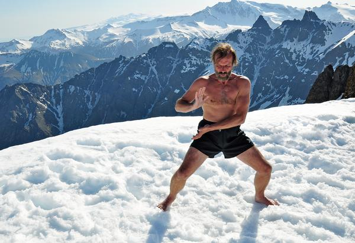

Becoming Superhuman
Below are the steps to master the Wim Hof breathing technique. If at any point in the process do you find yourself uncomfortable, discontinue the process.
WARNING! Never perform the exercise:
- in a body of water
- while driving
- in any situation where loss of consciousness poses serious risks

Image: Wim Hof posing atop a mountains made of ice. (Source: www.spabusiness.com)
Step 1: Get comfortable
Sit in a meditation posture, whatever is most comfortable for you. Close your eyes. Make sure you can expand your lungs freely without feeling any constriction. It is recommended to do this practice right after waking up since your stomach is still empty.
Step 2: Warm Up
Inhale deeply. Really draw the breath in until you feel a slight pressure from inside your chest on your solar plexus. Hold this for a moment and then exhale completely. Push the air out as much as you can. Hold this for a moment. Repeat this warm up round 15 times.
Step 3: Draw 30-40 Power Breaths
Inhale deeply through the mouth and exhale in short but powerful bursts (Advanced method: Inhale deeply through the nose and exhale through the mouth). The belly is pulled inward when you are breathing out and is pulled outward when you are breathing in. Keep a steady pace. Close your eyes and do this around 30-40 times or until you feel your body is saturated with oxygen. Symptoms include: light-headedness and tingling sensations in the body.
Step 4: Hold Your Breath
After the 30-40 rapid succession of breath cycles, draw the breath in once more and fill the lungs to maximum capacity without using too much force. Then push all of the air out and hold for as long as you can. Try holding your breath from 1-3 minutes. Really relax and open all energy channels in your body. Notice how all the oxygen is spreading around in your body. Hold the breath until you experience the gasp reflex on the top of your chest.
Step 5: Recovery Breath
When you can no longer hold your breath, inhale to full capacity. Feel your chest expanding. Release any tension in the solar plexus. When you are at full capacity, hold the breath once more. Hold this for around 15 seconds. Notice that you can direct the energy with your awareness. Use this time to scan the body and see where there is no color, tension or blockages. Feel the edges of this tension, go into it, move the energy towards this black hole. Feel the constrictions burning away, the dark places fill with light. Relax the body deeper as you move further inward, let everything go. Your body knows better than you do. After 10- 15 seconds, exhale completely. That ends the first round.
Repitition
Start practicing with just one or two rounds, depending on how comfortable you are with it. The next round should immediately follow after exhaling the final recovery breath. After a few days, start adding more rounds.
When you are comfortable enough, try doing 3-4 rounds every morning right after you wake up, and while on an empty stomach.
Cold Exposure
Wim always mentions that “the cold is your warm friend!” Once you are comfortable with the breathing techniques, it is now time for the cold. Cold exposure should be done gradually, and never fully right away. To start, shower with warm water and end your shower with 15-30 seconds of cold water only. Begin with your feet and then follow with your legs, your stomach, shoulders, neck, and back. An initial shock, shivering and hyperventilation is normal. Try to remain calm and breathe easily. Close your eyes and really try to embrace the cold. If you feel any strong physical uncomfortableness, like heavy shivering, numbness or pain, get your body warm again as soon as possible.
Do this every time you shower, and you will feel your veins contract and get stronger, every time they come into contact with the cold. In time, the veins will become so healthy that the heart does not need to pump a lot of blood around the body. With increased exposure, the cold will feel just as comfortable as a warm shower.